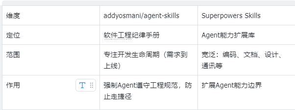
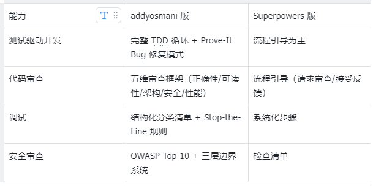
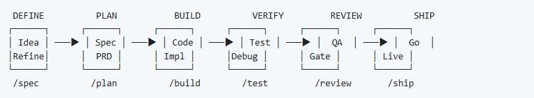
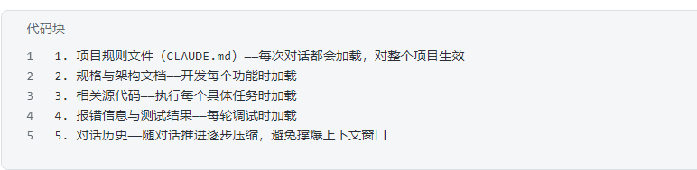
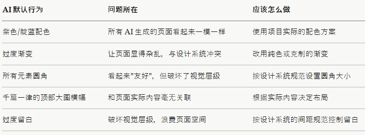
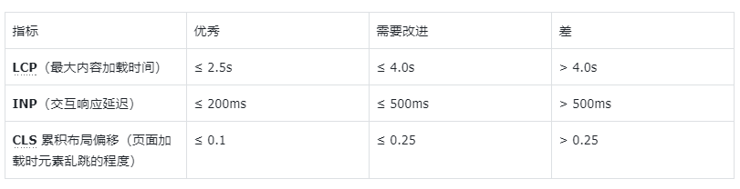
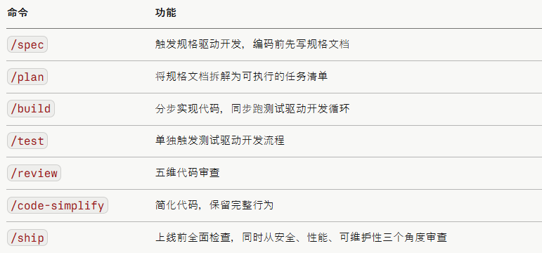

大家用AI写代码时应该都遇到过这种情况：
让它写一个功能，它很快就给你生成了一大堆代码，但测试没写、安全没考虑、边界情况没处理、架构一塌糊涂偏，但是能跑起来，也没报错。
这就是 AI 编程助手的特点：快速、流畅，但缺乏工程纪律。
最近，Google 总监 Addy Osmani（曾长期深耕 Chrome 团队，现负责 Gemini 与 Google Cloud 方向），为了解决这个问题，开源了一个叫做 agent-skills 的项目，这个项目的目的是让 AI 按照 Google 工程师的标准写代码。
地址：github.com/addyosmani/agent-skills
这个Agent-Skills 集到底是什么？
一句话：一套让 AI 编程助手像资深工程师一样思考的工作流手册。
项目里有 20 个 Skill（技能文件）、3 个专家角色、7 个斜杠命令，覆盖了从写需求到上线发布的完整开发生命周期。
支持所有主流 AI 编程工具，如Claude Code、Cursor、Antigravity等等。
为什么说这是谷歌工程文化的产物？
这套 Skills 里充满了来自谷歌内部工程实践的影子，几个核心概念直接来自《Software Engineering at Google》这本书：
海勒姆定律（Hyrum's Law），来自 Google 工程师 Hyrum Wright：
一旦 API 有足够多的用户，所有可观察的行为——包括 bug，都会被人依赖。
这条定律直接影响了 Skills 里 API 设计和迁移的整套做法。
Beyoncé Rule，来自 Google 内部文化：
"如果你喜欢它，就给它加测试。"
这条原则在测试驱动开发 Skill 里被直接引用。
Chesterton's Fence，哲学原则，在 Google 工程师里广泛流传：
改代码之前，先理解它为什么存在。
这条原则防止 AI 莽撞地删代码。
这套 Skills 的核心理念是：把高级工程师的决策过程，转化为 AI 可以执行的工作流。
这套Skills集和 Superpowers Skills 有什么不同？
一句话，这套Skills集是AI必须遵守的规范，Superpowers 是对Agent能力的扩展

两者也有重叠，但侧重点不同：

20 个 Skill 全解析
整个库按软件开发的五个阶段组织：定义 → 计划 → 构建 → 验证 → 发布。

DEFINE 阶段：定义要做什么
Skill 1：idea-refine — 想法精炼
场景：你有一个模糊的想法，需要把它变成清晰可行的方案。
Skill 2：spec-driven-development — 规格驱动开发
场景：任何超过 30 分钟的开发任务，编码前先写规格文档。
规格文档要包含的六个核心区域：
目标：做什么、为什么、谁用、成功标准是什么
常用脚本：项目的构建、测试、启动等命令（如 npm run build、npm test）
项目结构：源码、测试用例、文档各在哪
代码风格：用真实代码片段示范，比文字描述更清晰
测试策略：用什么框架、覆盖率要求
边界规则：明确 AI 在什么情况下可以自行决定，什么情况下必须先确认
- 自行决定：运行测试、遵循命名规范
- 先问再做：改数据库 Schema、添加依赖
- 永远不做：提交 secrets、删除失败的测试
PLAN 阶段：如何构建
Skill 3：planning-and-task-breakdown — 规划和任务分解
场景：把规格文档拆解成可以同时推进、完成后能明确验收的子任务。
每个子任务都要写清楚：任务描述、3-5 条可验收的完成标准、验证方式、前置依赖、涉及哪些文件、工作量估算。
BUILD 阶段：写代码
Skill 4：incremental-implementation — 增量实现
场景：防止 AI 一口气写几百行后无法调试。
每完成一步，项目必须能正常编译；只改任务要求改的文件，不动无关代码；功能还没做完就需要合并时，用 Feature Flag 把它隐藏起来。
Skill 5：test-driven-development — 测试驱动开发
场景：实现核心业务逻辑，或修复有明确复现路径的 Bug
测试金字塔：80% 单元测试+ 15% 集成测试（API + 测试数据库）+ 5% E2E 测试（模拟真实用户完整操作流程）。
Skill 6：context-engineering — 上下文工程
场景：AI 开始编造内容、无视项目已有约定时，检查上下文质量。
AI 输出质量很大程度取决于你给它的上下文质量。
信息加载优先级：

Skill 7：source-driven-development — 文档驱动开发
场景：需要框架最新、最准确的写法时。
要求 AI 不能凭训练记忆实现某个框架专有的写法，必须查阅官方文档后再实现，并标注文档来源。可信来源优先级：官方文档 > 官方博客或更新日志 > Web 标准。
Skill 8：frontend-ui-engineering — 前端 UI 工程
场景：构建或修改用户界面。
这个 Skill 有一个特别有意思的表格，列出了AI 的美学默认值，及为什么要避免：
别有意思的表格，列出了AI 的美学默认值，及为什么要避免：

Skill 9：api-and-interface-design — API 与接口设计
场景：设计对外暴露的接口，或划定模块之间的职责边界时。
三个核心原则：
海勒姆定律：就算你没有明确承诺某个行为，只要用户能观察到它，就会有人开始依赖它。API 设计要为稳定性负责。
单一版本原则：接口只做扩展，不另起新版本，不要强迫用户同时维护多套接口。
协议优先：先定义好接口协议，再写具体实现。
Skill 10：browser-testing-with-devtools — 浏览器测试
场景：调试前端问题，验证 UI 修复是否真的有效。
通过 Chrome DevTools MCP，AI 可以直接接入浏览器，观察页面结构是否正确、控制台有没有报错、网络请求有没有失败、页面加载性能是否达标。
Skill 11：debugging-and-error-recovery — 调试与问题修复
场景：测试失败、构建出错、行为不符合预期。
核心原则是 Stop-the-Line Rule——遇到让项目无法继续推进的错误时，立即停下来修复，而不是绕过它继续推进。这条规则来自丰田生产线：流水线上任何一个工人发现质量问题，都有权叫停整条生产线。谷歌把同样的思路引入了工程文化。
REVIEW 阶段：合并前的质量审查
Skill 12：code-review-and-quality — 代码审查
场景：任何代码合并前都必须过这一关，没有例外。
五个维度的审查：
正确性：实现是否和规格文档一致？异常输入和极端情况处理了吗？测试是否真的验证了正确的行为？
可读性：命名清晰吗？能用 100 行写清楚的东西，写了 1000 行是失败。
架构：是否遵循了现有的代码模式？有没有引入循环依赖？封装的粒度合适吗？
安全性：用户输入做了校验吗？密钥、密码等敏感信息存放安全吗？SQL 查询有没有做防注入处理？
性能：有没有 N+1 查询问题？返回列表数据的接口有没有做分页？有没有不必要的重复渲染？
Skill 13：code-simplification — 代码简化
场景：功能正常、测试通过，但代码臃肿冗余。
改代码之前，先搞清楚两件事：这段代码的作用是什么？当时为什么这么写？（性能考虑？平台限制？历史遗留问题？）理解之后再动手，而不是凭感觉直接删改。
Skill 14：security-and-hardening — 安全加固
场景：构建任何接受用户输入、涉及登录验证或权限控制、处理敏感数据的功能。
以下这些事，一律禁止：把密钥、密码等敏感信息提交到代码仓库；把敏感数据写进日志；把客户端验证当作安全边界；把登录凭证存在浏览器本地存储（localStorage）里；把服务端的报错堆栈直接返回给用户。
Skill 15：performance-optimization — 性能优化
场景：Core Web Vitals（谷歌网页体验核心指标） 分数不达标，或者有明显性能瓶颈。
Core Web Vitals 目标值：

先测量，再修复，再验证——没有数据支撑的优化只是猜测。
SHIP 阶段：有信心地发布
Skill 16-20：Git 工作流 / CI/CD / 旧功能下线迁移 / 架构决策记录 / 上线发布
发布不只是点击部署按钮——这五个 Skill 确保每一步都有据可查、可回滚、可追溯。
7 个斜杠命令，一键激活工作流
在 在 Claude Code 等 AI 编程工具里，直接输入命令即可触发相应的Skills

写在最后
有了这套AI编码工作流手册，AI 就不仅仅是在帮你写代码，更是在模拟一个工程师。你给它什么样的规范，它就会成为什么样的工程师。
这就是 Addy Osmani 想传递的理念：我们不是在让 AI 更聪明，而是在给 AI 工程纪律。